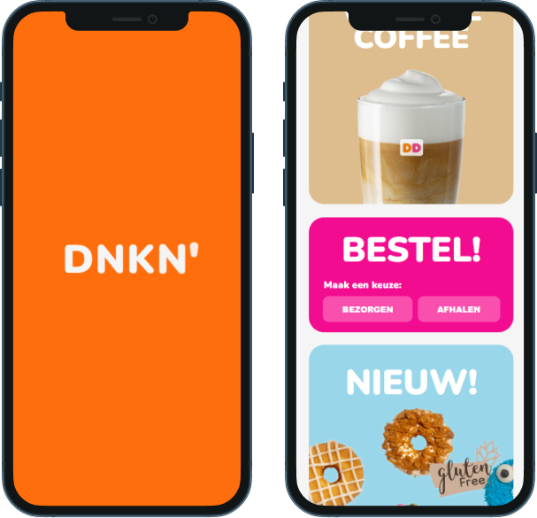

DUNKIN' DONUTS
This is a remake of the dunkin' donuts website for my front end development class.
link to the live siteCONTEXT
For this class i had to remake a website of my choice. In this class we only had to make 2 pages and we about learned about accessability, responsiveness and css animations. We could choose between making our website responsive or adding animations and i chose for css animations.
ROLES
Front-end developer
TIMELINE
5 weeks, september 2024 - october 2024